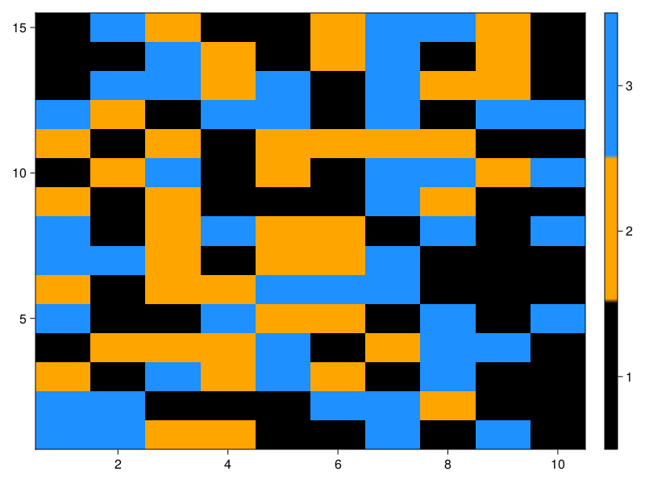

How do I ...
The purpose of this section is to do a collection of small convinient pieces of code on how to do simple things.
Question
Extract the axes names from a Cube¤
using YAXArrays
using DimensionalData
c = YAXArray(rand(10, 10, 5))
caxes(c)
Dim{:Dim_1} Sampled{Int64} Base.OneTo(10) ForwardOrdered Regular Points,
Dim{:Dim_2} Sampled{Int64} Base.OneTo(10) ForwardOrdered Regular Points,
Dim{:Dim_3} Sampled{Int64} Base.OneTo(5) ForwardOrdered Regular Points
Question
Obtain values from axes and data from the cube¤
There are two options to collect values from axes. In this examples the axis ranges from 1 to 10.
# this two examples bring the same result
collect(getAxis("Dim_1", c).val)
collect(c.axes[1].val)
# to collect data from a cube works exactly the same as doing it from an array
c[:, :, 1]
10×10 YAXArray{Float64,2} with dimensions:
Dim{:Dim_1} Sampled{Int64} 1:10 ForwardOrdered Regular Points,
Dim{:Dim_2} Sampled{Int64} 1:10 ForwardOrdered Regular Points
Total size: 800.0 bytes
Concatenate cubes¤
It is possible to concatenate several cubes that shared the same dimensions using the [concatenatecubes]@ref function.
let's create two dummy cubes
using YAXArrays
axlist = (
Dim{:time}(range(1, 20, length=20)),
Dim{:lon}(range(1, 10, length=10)),
Dim{:lat}(range(1, 5, length=15))
)
data1 = rand(20, 10, 15)
ds1 = YAXArray(axlist, data1)
data2 = rand(20, 10, 15)
ds2 = YAXArray(axlist, data2)
20×10×15 YAXArray{Float64,3} with dimensions:
Dim{:time} Sampled{Float64} 1.0:1.0:20.0 ForwardOrdered Regular Points,
Dim{:lon} Sampled{Float64} 1.0:1.0:10.0 ForwardOrdered Regular Points,
Dim{:lat} Sampled{Float64} 1.0:0.2857142857142857:5.0 ForwardOrdered Regular Points
Total size: 23.44 KB
Now we can concatenate ds1 and ds2 cubes:
dsfinal = concatenatecubes([ds1, ds2], Dim{:Variables}(["var1", "var2"]))
dsfinal
20×10×15×2 YAXArray{Float64,4} with dimensions:
Dim{:time} Sampled{Float64} 1.0:1.0:20.0 ForwardOrdered Regular Points,
Dim{:lon} Sampled{Float64} 1.0:1.0:10.0 ForwardOrdered Regular Points,
Dim{:lat} Sampled{Float64} 1.0:0.2857142857142857:5.0 ForwardOrdered Regular Points,
Dim{:Variables} Categorical{String} String["var1", "var2"] ForwardOrdered
Total size: 46.88 KB
How do I subset a Cube?¤
Let's start by creating a dummy cube
# define the time span of the cube
using Dates
t = Date("2020-01-01"):Month(1):Date("2022-12-31")
# create cube axes
axes = (Dim{:Lon}(1:10), Dim{:Lat}(1:10), Dim{:Time}(t))
# assign values to a cube
c = YAXArray(axes, reshape(1:3600, (10, 10, 36)))
10×10×36 YAXArray{Int64,3} with dimensions:
Dim{:Lon} Sampled{Int64} 1:10 ForwardOrdered Regular Points,
Dim{:Lat} Sampled{Int64} 1:10 ForwardOrdered Regular Points,
Dim{:Time} Sampled{Date} Date("2020-01-01"):Dates.Month(1):Date("2022-12-01") ForwardOrdered Regular Points
Total size: 28.12 KB
Now we subset the cube by any dimension
# subset cube by years
ctime = c[Time=Between(Date(2021,1,1), Date(2021,12,31))]
# subset cube by a specific date and date range
ctime2 = c[Time=At(Date("2021-05-01"))]
ctime3 = c[Time=Date("2021-05-01") .. Date("2021-12-01")]
# subset cube by longitude and latitude
clonlat = c[Lon=1 .. 5, Lat=5 .. 10] # check even numbers range, it is ommiting them
5×6×36 YAXArray{Int64,3} with dimensions:
Dim{:Lon} Sampled{Int64} 1:5 ForwardOrdered Regular Points,
Dim{:Lat} Sampled{Int64} 5:10 ForwardOrdered Regular Points,
Dim{:Time} Sampled{Date} Date("2020-01-01"):Dates.Month(1):Date("2022-12-01") ForwardOrdered Regular Points
Total size: 8.44 KB
How do I apply map algebra?¤
Our next step is map algebra computations. This can be done effectively using the 'map' function. For example:
# multiplying cubes with only spatio-temporal dimensions
map((x, y) -> x * y, ds1, ds2)
# cubes with more than 3 dimensions
map((x, y) -> x * y, dsfinal[Variables=At("var1")], dsfinal[Variables=At("var2")])
20×10×15 YAXArray{Float64,3} with dimensions:
Dim{:time} Sampled{Float64} 1.0:1.0:20.0 ForwardOrdered Regular Points,
Dim{:lon} Sampled{Float64} 1.0:1.0:10.0 ForwardOrdered Regular Points,
Dim{:lat} Sampled{Float64} 1.0:0.2857142857142857:5.0 ForwardOrdered Regular Points
Total size: 23.44 KB
To add some complexity, we will multiply each value for π and then divided for the sum of each time step. We will use the ds1 cube for this purpose.
mapslices(ds1, dims=("Lon", "Lat")) do xin
(xin * π) ./ maximum(skipmissing(xin))
end
10×15×20 YAXArray{Union{Missing, Float64},3} with dimensions:
Dim{:lon} Sampled{Float64} 1.0:1.0:10.0 ForwardOrdered Regular Points,
Dim{:lat} Sampled{Float64} 1.0:0.2857142857142857:5.0 ForwardOrdered Regular Points,
Dim{:time} Sampled{Float64} 1.0:1.0:20.0 ForwardOrdered Regular Points
Total size: 23.44 KB
How do I use the CubeTable function?¤
The function "CubeTable" creates an iterable table and the result is a DataCube. It is therefore very handy for grouping data and computing statistics by class. It uses OnlineStats.jl to calculate statistics, and weighted statistics can be calculated as well.
Here we will use the ds1 Cube defined previously and we create a mask for data classification.
# cube containing a mask with classes 1, 2 and 3
classes = YAXArray((getAxis("lon", dsfinal), getAxis("lat", dsfinal)), rand(1:3, 10, 15))
using CairoMakie
CairoMakie.activate!()
This is how our classification map looks like
fig, ax, obj = heatmap(classes.data[:, :];
colormap = cgrad([:black, :orange, :dodgerblue], 3, categorical=true))
cbar = Colorbar(fig[1,2], obj)
mn, mx, N = 1,3,3
δn = (mx - mn)/N
ticks_position = [mn + δn/2 + (i-1)*δn for i in 1:N]
cbar.ticks = (ticks_position, string.(mn:mx))
fig

Now we define the input cubes that will be considered for the iterable table
t = CubeTable(values=ds1, classes=classes)
using DataFrames
using OnlineStats
# visualization of the CubeTable
c_tbl = DataFrame(t[1])
first(c_tbl, 5)
| Row | values | classes | time | lon | lat |
|---|---|---|---|---|---|
| Float64 | Int64 | Float64 | Float64 | Float64 | |
| 1 | 0.173215 | 3 | 1.0 | 1.0 | 1.0 |
| 2 | 0.857983 | 3 | 2.0 | 1.0 | 1.0 |
| 3 | 0.813332 | 3 | 3.0 | 1.0 | 1.0 |
| 4 | 0.458762 | 3 | 4.0 | 1.0 | 1.0 |
| 5 | 0.239859 | 3 | 5.0 | 1.0 | 1.0 |
In this line we calculate the Mean for each class
fitcube = cubefittable(t, Mean, :values, by=(:classes))
3-element YAXArray{Union{Missing, Float64},1} with dimensions:
Dim{:classes} Sampled{Int64} Int64[1, 2, 3] ForwardOrdered Irregular Points
Total size: 24.0 bytes
We can also use more than one criteria for grouping the values. In the next example, the mean is calculated for each class and timestep.
fitcube = cubefittable(t, Mean, :values, by=(:classes, :time))
3×20 YAXArray{Union{Missing, Float64},2} with dimensions:
Dim{:classes} Sampled{Int64} Int64[1, 2, 3] ForwardOrdered Irregular Points,
Dim{:time} Sampled{Float64} 1.0:1.0:20.0 ForwardOrdered Regular Points
Total size: 480.0 bytes
Question
convertions types DimArray & YAXArray¤
using YAXArrays, YAXArrayBase
using DimensionalData
DimArray to YAXArray¤
dim_arr = rand(X(1:5), Y(10.0:15.0), metadata = Dict{String, Any}())
5×6 DimArray{Float64,2} with dimensions:
X Sampled{Int64} 1:5 ForwardOrdered Regular Points,
Y Sampled{Float64} 10.0:1.0:15.0 ForwardOrdered Regular Points
10.0 11.0 12.0 13.0 14.0 15.0
1 0.352486 0.292379 0.668771 0.599302 0.623401 0.609367
2 0.0895131 0.360661 0.349515 0.219197 0.359132 0.756893
3 0.215931 0.637731 0.942744 0.483128 0.916392 0.891231
4 0.970152 0.70317 0.443942 0.976499 0.582739 0.649813
5 0.827036 0.888389 0.735376 0.532552 0.751698 0.580358
metadata
Note the metadata argument. Needed by yaxconvert.
yax_arr = yaxconvert(YAXArray, dim_arr)
5×6 YAXArray{Float64,2} with dimensions:
Dim{:X} Sampled{Int64} 1:5 ForwardOrdered Regular Points,
Dim{:Y} Sampled{Float64} 10.0:1.0:15.0 ForwardOrdered Regular Points
Total size: 240.0 bytes
And saving it:
using Zarr, NetCDF
savecube(yax_arr, "yax_arr.nc", driver=:netcdf)
5×6 YAXArray{Float64,2} with dimensions:
Dim{:X} Sampled{Int64} 1:5 ForwardOrdered Regular Points,
Dim{:Y} Sampled{Float64} 10.0:1.0:15.0 ForwardOrdered Regular Points
Total size: 240.0 bytes
or as a zarr file
savecube(yax_arr, "yax_arr.zarr", driver=:zarr)
5×6 YAXArray{Float64,2} with dimensions:
Dim{:X} Sampled{Int64} 1:5 ForwardOrdered Regular Points,
Dim{:Y} Sampled{Float64} 10.0:1.0:15.0 ForwardOrdered Regular Points
Total size: 240.0 bytes
And going back to the DimArray type is also possible.
YAXArray into a DimArray¤
dim_arr = yaxconvert(DimArray, yax_arr)
5×6 DimArray{Float64,2} with dimensions:
Dim{:X} Sampled{Int64} 1:5 ForwardOrdered Regular Points,
Dim{:Y} Sampled{Float64} 10.0:1.0:15.0 ForwardOrdered Regular Points
10.0 11.0 12.0 13.0 14.0 15.0
1 0.352486 0.292379 0.668771 0.599302 0.623401 0.609367
2 0.0895131 0.360661 0.349515 0.219197 0.359132 0.756893
3 0.215931 0.637731 0.942744 0.483128 0.916392 0.891231
4 0.970152 0.70317 0.443942 0.976499 0.582739 0.649813
5 0.827036 0.888389 0.735376 0.532552 0.751698 0.580358
at the moment there is no support to save a DimArray directly into disk as a NetCDF or a Zarr file.
Question
Assing variable names to YAXArrays in a Dataset¤
One variable name¤
ds = YAXArrays.Dataset(; (:a => YAXArray(rand(10)),)...)
YAXArray Dataset
Shared Axes:
Dim{:Dim_1} Sampled{Int64} Base.OneTo(10) ForwardOrdered Regular Points
Variables:
a,
Multiple variable names¤
keylist = (:a, :b, :c)
varlist = (YAXArray(rand(10)), YAXArray(rand(10,5)), YAXArray(rand(2,5)))
ds = YAXArrays.Dataset(; (keylist .=> varlist)...)
YAXArray Dataset
Shared Axes:
()
Variables:
a
with dimensions:
Dim{:Dim_1} Sampled{Int64} Base.OneTo(10) ForwardOrdered Regular Points
b
with dimensions:
Dim{:Dim_1} Sampled{Int64} Base.OneTo(10) ForwardOrdered Regular Points,
Dim{:Dim_2} Sampled{Int64} Base.OneTo(5) ForwardOrdered Regular Points
c
with dimensions:
Dim{:Dim_1} Sampled{Int64} Base.OneTo(2) ForwardOrdered Regular Points,
Dim{:Dim_2} Sampled{Int64} Base.OneTo(5) ForwardOrdered Regular Points
This page was generated using Literate.jl.